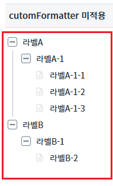
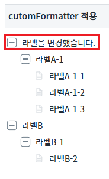
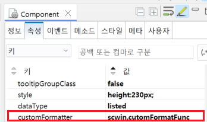

Treeview의 'cutomFormatter' 속성을 사용하여 노드의 라벨을 사용자가 설정하는 예제입니다.
포멧터 적용 확인
1
STEP 1: 초기 상태를 확인합니다.
'cutomFormatter 미적용' 에서 Treeview의 각 노드들의 라벨을 확인합니다.Image 1.브라우저(Chrome) 실행 예시

2
STEP 2: 적용된 결과를 확인합니다.
'cutomFormatter 적용' 에서 가장 상단에 포멧터가 적용된 노드를 확인합니다.Image 2.브라우저(Chrome) 실행 예시

TreeView의 'customFormatter' 속성에 적용할 함수이름을 다음과 같이 설정합니다.
Image 3.웹스퀘어 스튜디오의 Component View - 속성 설정 예시

Example 1.Source
<w2:treeview customFormatter="scwin.customFormatFunc"> <!-- 중략 --> </w2:treeview>
customFormatter